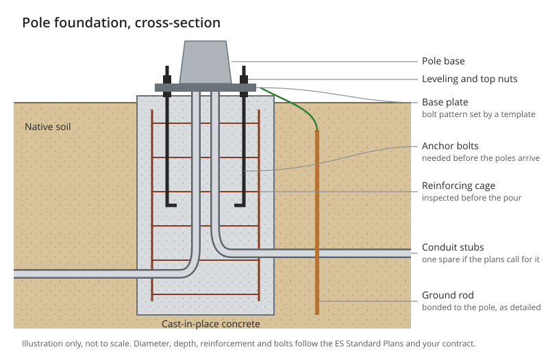

Foundations: cabinet, pole and sign
In one sentence: a foundation is the concrete base a pole or cabinet bolts onto, and it has to be right the first time.
Types
- Pole foundations for signal and lighting standards, CCTV and communication poles: usually drilled, reinforced concrete piles.
- Cabinet foundations: a pad with conduit stubs coming up under the cabinet.
- Sign and solar foundations as detailed on the plans.
Dimensions and reinforcement come from the Standard Plans: the ES (electrical) series and the project plans.
Materials
| Item | What it is for |
|---|---|
| Anchor bolts and templates | Hold the pole or cabinet; the template sets the bolt pattern |
| Rebar | Reinforces the concrete |
| Forms or sonotubes | Shape the foundation above ground |
| Concrete | The foundation itself; keep the tickets |
| Ground rod and conductor | Grounding as detailed. See Grounding and bonding |
| Conduit stubs | Bring the conduits up into the pole or cabinet |
Inspection

The inspector checks the excavation, reinforcement, bolt pattern, conduit stubs and grounding before the pour. Concrete must cure before loading. See Phase 3: Pull boxes and foundations.
PM notes
Anchor bolts often come with the poles but are needed weeks earlier. Order them first.
Common mistakes / what Caltrans actually checks
- Wrong bolt pattern or orientation.
- Pouring without inspection.
- Missing a conduit stub.
- Loading a foundation before it has cured.